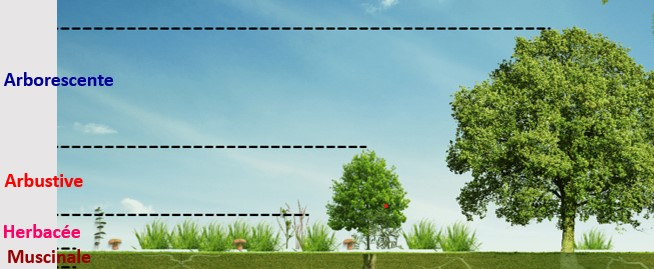
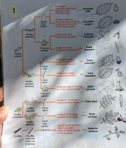

la biodiversité des phosphatières du Cloup d'Aural est constituer d'une biodiversité vegetale.La biodiversité est l'ensemble de la variété des êtres vivants et des écosystèmes sur Terre. Cela comprend toutes les formes de vie, des petits organismes invisibles à l'œil nu aux grands animaux et plantes, ainsi que les interactions et les relations qui les unissent dans leur environnement naturel.La biodiversité des phosphatières du Cloup d'Aural est vegetale elle comprend l'ensemble des vegetaux.
Cette biodiversité vegetale est constituer de 4 strate vegetale:

la strate muscinale
composer de mousse
La strate herbacée
composer principalement Poacées qui sont des feuille allonger en nervure parallele et autre herbe ex:trefle.
La strate arbustive
composer de genevrier qui sont des feuille en forme d'epine et de cornouilller male possedant de petit fruit rouge sur le haut.
La strate arborescente
composer d'Érable de montpelier composer de 3 dents,Érable champêtre composer de 5 dents et le plus souvent de chene pubescent.
voici un schema permettant de reconnaitre les differents arbre et arbuste.

cette biodiversité n'a pas toujours été la même durant le passer, il y avait de la vie dans cette endroit qui n'etait pas encore une phosphatières effectivement la phosphatières etait remplie a des periodes differentes -50M et -30M.